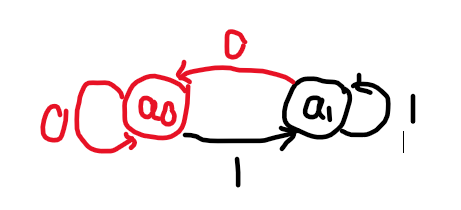
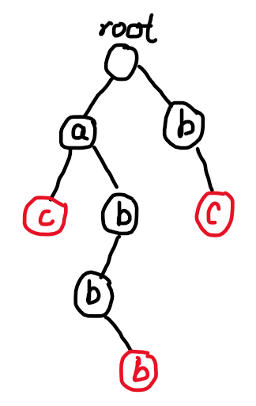

DFA，KMP和AC自动机
DFA：确定有限状态自动机¶
确定有限状态自动机（DFA，Deterministic Finite Automation），能够按顺序接受一个信号序列并判断其是否符合 DFA 所要判断的条件。
放在 OI 里来说，DFA 一般指：依次输入字符，每输入一次字符就进行一次转移，表示当前字符串从某个状态变到另一个状态，输入完所有字符后，即可直接判断是否符合条件。
DFA 的构成¶
将所有状态抽象成点后，把转移当做边，就可以将一个 DFA 看做一张有向图来进行处理。这张有向图中应该有这五部分：
-
\(Q\)，状态集。\(Q\) 中应有该字符串处理时可能存在的所有状态（点）。
-
\(\Sigma\)，字符集。\(\Sigma\) 中有且仅有所有可能的（合法的）输入字符。
-
\(q_0\)，起始状态。表示在还未输入时自动机所处的状态（点）。
-
\(F\)，终点集合。\(F\) 包含所有可接受的（符合条件的）状态（点）。
-
\(\delta\)，转移函数。假设当前处于自动机中的状态（点）\(q \in Q\)，输入了字符 \(c \in \Sigma\)，那么转移后的状态（点）\(q'=\delta(q,c)\)，并且 \(q' \in Q\)。简洁的来说，\(\delta\) 建立了每个状态（点）间关系，或者说边。设计 \(\delta\) 是整个程序中最重要的部分。
接下来，我们再重新描述一下 DFA 怎么工作：
-
一开始，当前状态（点）\(q=q_0\)。
-
现在，每输入一个字符 \(c \in \Sigma\)，于是 \(q \to \delta(q,c)\) 并且始终 \(q \in Q\)。
-
输入完字符串，如果 \(q \in F\)，于是这个字符串是可接受的。不然就不是。
DFA 的尝试构造¶
让我们浅尝一下：构造一个 DFA，输入一个二进制串并使它能够判断这个二进制串所对应的数是否偶数。首先，依旧是分五步：\(Q,\Sigma,q_0,F,\delta\)。
考虑，判断二进制串是否为偶数，只需看最后一位是否为 \(0\)。
-
\(Q=\left\{a_0,a_1\right\}\)，这是自动机中的两个状态，\(a_0\) 表示当前字符串最后一位为 \(0\)，\(a_1\) 表示最后一位为 \(1\)。
-
\(\Sigma=\left\{0,1\right\}\)，二进制串只有这两个字符。
-
\(q_0=a_0\)，当然 \(q_0=a_1\) 也行。为什么？
-
\(F=\left\{a_0\right\}\)，表示如果最终停在 \(a_0\)，说明是偶数，可接受。
-
\(\delta\)：\(\delta(q,0)=a_0,\delta(q,1)=a_1\)。
直观一些：

其中红点表示 \(F\) 中的点，黑点表示非 \(F\) 中的点，边上的数表示转移时所输入的字符。
从 DFA 的角度看看 KMP¶
KMP（Knuth Morris Pratt algorithm，用三个提出者的名字命名），可以检测模式串在匹配串中出现了几次。如果我们从 DFA 的角度考虑：接受一个字符串，当且仅当已知的模式串是该字符串的后缀。
在这里，我定义模式串为 \(S\)，被匹配串为 \(T\)。
注意，\(S\) 是已知的、不会变动的，我们将对它构造一个 DFA；而 \(T\) 则相当于输入的信号串，我们将使用构造出的 DFA 来检测 \(S\) 是否是它的后缀。
定义 \(|S|\) 表示 \(S\) 的长度（\(|T|\) 同理）。所有字符串下标从 \(1\) 开始。
Right 集合¶
举一个例子：当我们拥有 \(S=\texttt{moo}\)，且此时 \(T=\texttt{mmo}\)，那么我们可以发现，如果 \(T\) 后面在输入一个 \(\texttt{o}\)，那么就可以满足 KMP 的条件（\(S\) 是 \(T\) 的后缀）。
你是怎么得出来的？很显然，由于 \(T\) 的后两位与 \(S\) 的后两位相同。我们发现，这一点在 KMP 运作的过程中很重要：找出 \(T\) 的后缀与 \(S\) 的前缀相同的部分。
我们来关注一个集合：\(\mathrm{Right}(T)=\left\{x|T_{|T|-x+1\cdots|T|}=S_{1\cdots x}\right\}\)。通俗的来讲就是 \(\mathrm{Right}(T)\) 中包含所有的满足 \(T\) 的后 \(x\) 位与 \(S\) 的前 \(x\) 位相同。
举个例子
若 \(S=\texttt{ababb},T=\texttt{aabab}\)，
那么此时 \(\mathrm{Right}(T)=\left\{0,2,4\right\}\)。
这时，如果再输入一个字符 \(c\)，\(\mathrm{Right}(T)\) 会产生怎么样的变化呢？
我们发现：对于 \(\mathrm{Right}(T)\) 中的每一个元素 \(x\)，如果在 \(S\) 中满足 \(S_x\) 的后一个也是 \(c\)，那么\(\mathrm{Right}(T')\) 就必然包含 \(x+1\)。用数学语言表达：\(\mathrm{Right}(T+c)=\left\{x+1|x \in \mathrm{Right(T)}\land x \neq |S| \land S_{x+1}=c\right\} \cup \left\{0\right\}\)。
这就是 DFA 五个部分中的 \(\delta\) 转移。
注意
请注意这个转移，我们暂且把它叫做“\(\mathrm{Right}\) 转移”。
当 \(|S| \in \mathrm{Right(T)}\) 时，说明 \(S\) 是 \(T\) 的后缀，即到达一个可接受状态。
这时，如果已 \(\mathrm{Right(T)}\) 作为 DFA 的状态，我们会发现这个 DFA 的状态数多达 \(2^{|S|}\) 种（\(\mathrm{Right}(T) \in \left[0,|S|\right]\)），效率不高。
状态数真得有这么多吗？
其实不然。状态数最多只有 \(|S|+1\) 种。
简单思考一下，对于同一个串 \(S\)，\(\mathrm{Right}\) 集合 \(\left\{0,1,3\right\}\) 和 \(\left\{0,2,3\right\}\) 是不可能同时存在的。
为什么呢？因为 \(\mathrm{Right}\) 集合种最大的元素 \(k\) 就可以确定这一集合，也就是说最大的元素是 \(k\) 的 \(\mathrm{Right}\) 是唯一的。
因为知道了 \(k\)，就确定了 \(T\) 字符串的后缀是什么（\(S_{1 \cdots k}\)）。
也就是说 \(\mathrm{Right}(T)=\mathrm{Right}(S_{1 \cdots k})\)。这个前缀是唯一的，所以 \(k\) 所对应的 \(\mathrm{Right}\) 集合也是唯一的。
这在下一步中很重要。同时，这样通过寻找重复和不必要来使复杂度从 \(\mathcal{O}(a^n)\) 降到 \(\mathcal{O}(n)\)，在其他算法中也有出现。
fail 指针¶
虽然可以证明，\(\mathrm{Right}(T)\) 的并没有达到 \(2^{|S|}\) 种，但是用一个集合来表示状态实在不太方便。根据上面的证明，我们知道了集合中最大的一个元素 \(k\) 可以用来准确无误地表示这个集合。\(k \in [0,|S|]\)，我们用 \(k\) 来作为 DFA 的状态。
但是用 \(k\) 来作为状态会产生一个问题：我们如何通过 \(k\) 来反推出原集合中的所有数呢？
我们可以参考链表地存储方式：假设以 \(k\) 为最大值的集合是 \(A\)，定义 \(\mathrm{fail}_k\) 为 \(A\) 中第二大的元素。这样，我们就可以得出：\(\mathrm{Right}(T)=\left\{k,\mathrm{fail}_k,\mathrm{fail}_{\mathrm{fail}_k},\cdots,0\right\}\)（严格递减）。
现在的重点是：我们如何求 \(\mathrm{fail}_k\)？
首先，根据定义，\(\mathrm{fail}_1=0\)。其余的 \(\mathrm{fail}\) 指针可以递归求解：
对于 \(\mathrm{fail_i}\)，根据定义，\(A=\mathrm{Right}(T)=\mathrm{Right}(S_{1\cdots i})\)，再根据 \(\mathrm{Right}\) 集合的定义，\(S_{1 \cdots \mathrm{fail}_i}=S_{i-\mathrm{fail}_i \cdots i}\)。那么我们就是要找 \(S_{1 \cdots i}\) 中最长的一个不为 \(S_{1 \cdots i}\) 的同时是前缀与后缀的字符串 \(C\)，而 \(\mathrm{fail}_k=|C|\)。
再根据“\(\mathrm{Right}\) 转移”，\(\mathrm{Right}(S_{1 \cdots i})\) 可由 \(\mathrm{Right}(S_{1 \cdots i-1})\) 推来，而 \(\mathrm{Right}(S_{1 \cdots i-1})\) 是已知的（因为是递归计算，在计算 \(\mathrm{fail}_i\) 前已经计算好了 \(\mathrm{fail}_{1 \cdots i-1}\)），我们只需要通过不断跳 \(\mathrm{fail}\) 指针的方法遍历 \(\mathrm{Right}(S_{1 \cdots i-1})\)，然后找到一个满足 \(S_{x+1}=c=S_i\) 的 \(x\) 即可。
注意如果找不到，那么就为 \(0\)。
总结 & 代码 & 复杂度分析¶
总之，梳理一下，回到 DFA 的根本：
-
\(Q=\left\{0,1,\cdots,|S|\right\}\)，经过优化，用 \(k \in \left\{0,1,\cdots,|S|\right\}\) 作为状态。
-
\(\Sigma\)，应题而异，有时是 \(26\) 个小写字母，有时是数字或其他。
-
\(q_0=0\)，显然未输入字符时 \(\mathrm{Right}(\emptyset)=\left\{0\right\}\)。
-
\(F=\left\{|S|\right\}\)，当 \(T\) 后缀与 \(S\) 完全匹配时到达符合条件的状态。
-
\(\delta(q,c)=\begin{cases}q+1&S_{q+1}=c\\0&q=0\\\delta(\mathrm{fail}_q,c)&\mathrm{otherwise}\end{cases}\)
-
\(\mathrm{fail}_q=\begin{cases}0&q=1\\\delta(\mathrm{fail}_{q-1},S_q)&\mathrm{otherwise}\end{cases}\)
int ans=0;
scanf("%s",t+1); n=strlen(t+1);
if(m==1&&t[1]=='#') return 0;
scanf("%s",s+1); m=strlen(s+1);
for(int i=2,k=0;i<=m;i++) {
while(k&&s[k+1]!=s[i]) k=fail[k];
if(s[k+1]==s[i]) k++; fail[i]=k;
}
for(int i=1,k=0;i<=n;i++) {
while(k&&s[k+1]!=t[i]) k=fail[k];
if(s[k+1]==t[i]) k++;
if(k==n) ans++,k=fail[k];
}
int ans=0;
scanf("%s",t+1); n=strlen(t+1);
if(m==1&&t[1]=='#') return 0;
scanf("%s",s+1); m=strlen(s+1);
for(int i=2,k=0;i<=m;i++) {
while(k&&s[k+1]!=s[i]) k=fail[k];
if(s[k+1]==s[i]) k++; fail[i]=k;
}
for(int i=1,k=0;i<=n;i++) {
while(k&&s[k+1]!=t[i]) k=fail[k];
if(s[k+1]==t[i]) k++;
if(k==n) ans++,k=0;
}
通过程序，我们来稍微分析一下 KMP 的时间复杂度。
首先，由于每次 \(k\) 最多增加 \(1\)，所以整个循环下来，\(k\) 最多变成 \(n\)；然而 \(fail[k]\) 在最坏情况下也会使 \(k\) 减一，那么整个循环中，\(k\) 至多增减 \(2n\) 次，均摊下来时间复杂度为 \(\mathcal{O}(n+m)\)（包括预处理）。
对于像笔者这样的菜鸟，完全理解 KMP 要不少时间，但只要多花一些心思，仔细思考一下，KMP 还是比较好理解的。
KMP 的进化：AC 自动机¶
简单的介绍和对比¶
首先，AC 自动机本名叫做 Aho-Corasick Automaton，而不是 Accepted Automation。所以这个算法不能帮助你自动 AC 题目，而是帮助你处理一些字符串问题。
在上面 KMP 一节中，我们是匹配一个模式串；而 AC 自动机更加强大，可以匹配一堆模式串。其实，简单来说，AC 自动机就是 KMP 与 Trie 树的结合体。
（不知道 Trie 的请出门右转百度搜索）
比如我一个字符串 \(\texttt{abbacbc}\) 想要同时匹配 \(\texttt{ac,abba,bc}\) 三个字符串，那么该如何做？比如说，求模式串们各出现了几次？
如果使用传统的 KMP 去做，那么会喜提 \(\mathcal{O(m^2+nm)}\)，比如说共有 \(100\) 个模式串，每个模式串长达 \(100\) 个字符，而匹配串则长达 \(10^6\) 个字符，那阁下该如何应对？妥妥的超时。
而 AC 自动机能够做到的是：\(\mathcal{O(m|S|+n)}\) 的时间复杂度，其中 \(|S|\) 表示模式串长度。
比如上面的例子，我们对 \(\texttt{ac,abba,bc}\) 构造 Trie 树：

数学建模，套用 KMP 的思想¶
接下来，我们把匹配串放到这棵 Trie 树上跑，跑到红色节点时，相当于进入了一个理想的状态：某个模式串是当前字符串的后缀。此时，这棵 Trie 树就相当于一个 DFA（当然是不完整的）：
-
\(Q=\left\{root,a_0,a_1,a_2,\cdots\right\}\)，表示 Trie 树里有哪些节点。
-
\(\Sigma=\left\{\texttt{a,b,c,...,z}\right\}\)，字符集不多解释。
-
\(q_0=root\)，一开始为空串，在根节点处。
-
\(F=\left\{\cdots\right\}\)，表示所有红色节点（结束节点）。
-
\(\delta(q,c)=q'+1\)，表示从 \(root\) 到 \(q'\) 构成的串是自动机上当前字符串能够找到的最长后缀且 \(q'\) 具有 \(c\) 儿子。
我们仿照上面 KMP 的做法，也设计一个 \(fail\) 来加速 \(\delta\) 转移。
\(\delta(q,c)=\begin{cases}q'&q\;\mathrm{has\;son\;}c\;q'\\root&q=root\\\delta(fail[q],c)&\mathrm{otherwise}\end{cases}\)
（其中 \(q \mathrm{\;has\;son\;}c\;q'\) 表示 \(q\) 有 \(c\) 儿子 \(q'\)）
\(fail[i]=\begin{cases}0&i=root\\\delta(fail[fa[i]],c)&i\neq root\end{cases}\)
（其中 \(fa[i]\) 表示 \(i\) 节点的父亲，\(c\) 表示 \(i\) 节点所对应的字符）
如果觉得不好理解，可以看一看例子中补全的 DFA：

代码 & 复杂度分析¶
基本代码：
const int MAXN=1000005;
struct ACNode {
int son[26],fail;
int flag;
ACNode() {
flag=fail=0;
for(int i=0;i<26;i++) son[i]=0;
return ;
}
};
ACNode ac[MAXN];
int cnt;
void InsertString(string s) {
int now=0;
for(int i=0;s[i];i++) {
if(!ac[now].son[s[i]-'a']) ac[now].son[s[i]-'a']=++cnt;
now=ac[now].son[s[i]-'a'];
}
ac[now].flag=s.length();
return ;
}
void BuildAC() {
queue<int> que;
for(int i=0;i<26;i++)
if(ac[0].son[i]) que.push(ac[0].son[i]);
while(!que.empty()) {
int u=que.front(); que.pop();
for(int i=0;i<26;i++) {
if(!ac[u].son[i]) {
ac[u].son[i]=ac[ac[u].fail].son[i];
continue ;
}
que.push(ac[u].son[i]);
ac[ac[u].son[i]].fail=ac[ac[u].fail].son[i];
}
}
return ;
}
（2024/2/8：发现代码漏洞百出，重构了一遍）
在遇到不同的题目时，可以适当地利用 AC 机的结构来方便快捷地解题，将 AC 自动机与树形 DP、拓扑排序等算法联系起来。
这个算法继承了 Trie 并不算好的空间复杂度。